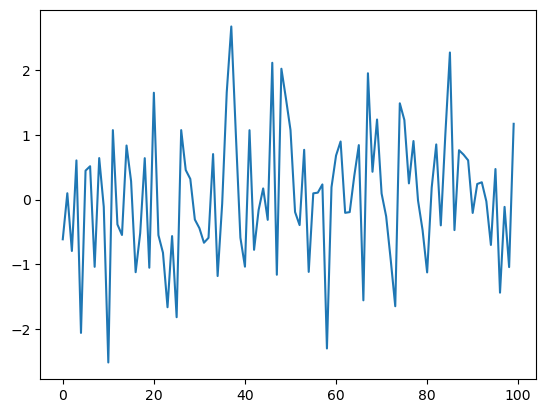
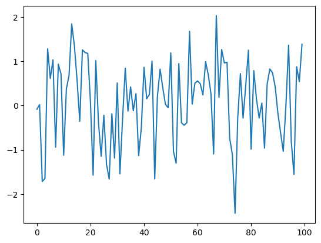
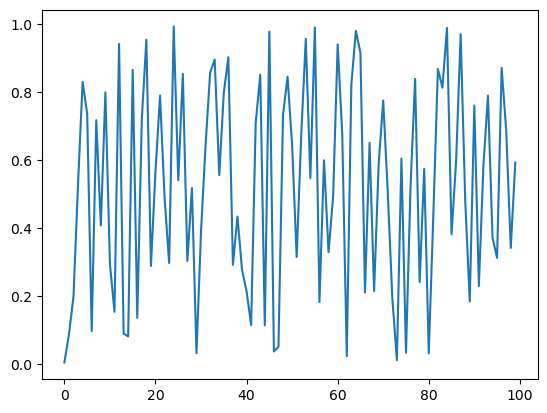
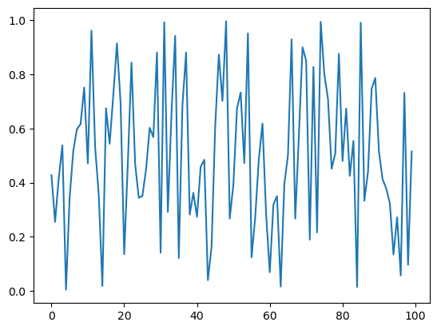

1. Functions#
1.1. Overview#
Functions എന്നത് almost all programming ലും ലഭ്യമായ ഒരു extremely useful construct ആണ്.
നമ്മൾ ഇതിനകം പല functions-ഉം കണ്ടുകഴിഞ്ഞു, ഉദാഹരണത്തിന്
NumPy-യിലെ
sqrt()function-ഉംbuilt-in
print()function-ഉം
ഈ lecture-ൽ നമ്മൾ
functions systematically ആയി treat ചെയ്യുകയും syntax-ഉം use-cases-ഉം cover ചെയ്യുകയും ചെയ്യും, കൂടാതെ
നമ്മുടെ സ്വന്തം user-defined functions എങ്ങനെ build ചെയ്യാം എന്ന് പഠിക്കുകയും ചെയ്യും.
നമ്മൾ ഇനി പറയുന്ന imports ഉപയോഗിക്കും.
import numpy as np
import matplotlib.pyplot as plt
1.2. Function Basics#
ഒരു function എന്നത് ഒരു program-ന്റെ named section ആണ്, അത് ഒരു specific task implement ചെയ്യുന്നു.
പല functions-ഉം ഇതിനകം exist ചെയ്യുന്നുണ്ട്, നമുക്ക് അവ as is ഉപയോഗിക്കാം.
ആദ്യം നമ്മൾ ഈ functions review ചെയ്യും, എന്നിട്ട് നമ്മുടെ സ്വന്തം functions എങ്ങനെ build ചെയ്യാം എന്ന് discuss ചെയ്യും.
1.2.1. Built-In Functions#
Python-ന് import ഇല്ലാതെ available ആയ പല built-in functions-ഉം ഉണ്ട്.
നമ്മൾ ഇതിനകം ചിലത് കണ്ടു
max(19, 20)
20
print('foobar')
foobar
str(22)
'22'
type(22)
int
Python built-ins-ന്റെ full list ഇവിടെ ഉണ്ട്.
1.2.2. Third Party Functions#
built-in functions നമുക്ക് വേണ്ടത് cover ചെയ്യുന്നില്ലെങ്കിൽ, നമ്മൾ ഒന്നുകിൽ functions import ചെയ്യണം അല്ലെങ്കിൽ നമ്മുടെ സ്വന്തം functions create ചെയ്യണം.
Functions import ചെയ്ത് ഉപയോഗിക്കുന്നതിന്റെ examples previous lecture-ൽ നൽകിയിരുന്നു.
ഇതാ മറ്റൊരു example, ഇത് ഒരു നിശ്ചിത വർഷം leap year ആണോ എന്ന് test ചെയ്യുന്നു:
import calendar
calendar.isleap(2024)
True
1.3. Defining Functions#
പല instances-ലും നമ്മുടെ സ്വന്തം functions define ചെയ്യാൻ കഴിയുന്നത് useful ആണ്.
ഇത് എങ്ങനെ ചെയ്യാം എന്ന് discuss ചെയ്തുകൊണ്ട് നമുക്ക് തുടങ്ങാം.
1.3.1. Basic Syntax#
ഇതാ ഒരു very simple Python function, ഇത് mathematical function \(f(x) = 2 x + 1\) implement ചെയ്യുന്നു
def f(x):
return 2 * x + 1
നമ്മൾ ഈ function define ചെയ്തതിനുശേഷം, നമുക്ക് ഇത് call ചെയ്ത് നമ്മൾ expect ചെയ്യുന്നത് പോലെ ചെയ്യുന്നുണ്ടോ എന്ന് check ചെയ്യാം:
f(1)
3
f(10)
21
ഇതാ ഒരു longer function, ഇത് ഒരു നിശ്ചിത number-ന്റെ absolute value compute ചെയ്യുന്നു.
(ഇത്തരം ഒരു function built-in ആയി ഇതിനകം exist ചെയ്യുന്നുണ്ട്, പക്ഷേ exercise-ന് വേണ്ടി നമുക്ക് നമ്മുടെ സ്വന്തം function എഴുതാം.)
def new_abs_function(x):
if x < 0:
abs_value = -x
else:
abs_value = x
return abs_value
ഇവിടെ syntax review ചെയ്യാം.
defഎന്നത് function definitions തുടങ്ങാൻ ഉപയോഗിക്കുന്ന ഒരു Python keyword ആണ്.def new_abs_function(x):ഈ function-ന്റെ പേര്new_abs_functionആണെന്നും അതിന്xഎന്ന single argument ഉണ്ടെന്നും indicate ചെയ്യുന്നു.Indented code എന്നത് function body എന്ന് വിളിക്കുന്ന ഒരു code block ആണ്.
returnkeyword indicate ചെയ്യുന്നത്abs_valueഎന്നത് calling code-ലേക്ക് return ചെയ്യേണ്ട object ആണ് എന്നാണ്.
ഈ whole function definition Python interpreter read ചെയ്ത് memory-യിൽ store ചെയ്യുന്നു.
ഇത് പ്രവർത്തിക്കുന്നുണ്ടോ എന്ന് check ചെയ്യാൻ നമുക്ക് ഇത് call ചെയ്യാം:
print(new_abs_function(3))
print(new_abs_function(-3))
3
3
ശ്രദ്ധിക്കുക, ഒരു function-ന് arbitrarily many return statements ഉണ്ടാകാം (zero ഉൾപ്പെടെ).
Function-ന്റെ execution ആദ്യത്തെ return hit ചെയ്യുമ്പോൾ terminate ആകും, ഇത് ഇനി പറയുന്ന example പോലുള്ള code അനുവദിക്കുന്നു
def f(x):
if x < 0:
return 'negative'
return 'nonnegative'
(Multiple return statements ഉള്ള functions എഴുതുന്നത് സാധാരണയായി discourage ചെയ്യുന്നു, കാരണം ഇത് logic follow ചെയ്യാൻ ബുദ്ധിമുട്ടാക്കും.)
Return statement ഇല്ലാത്ത functions automatically special Python object None return ചെയ്യുന്നു.
1.3.2. Keyword Arguments#
previous lecture-ൽ, നിങ്ങൾ ഈ statement കണ്ടിരുന്നു
plt.plot(x, 'b-', label="white noise")
Matplotlib-ന്റെ plot function-ലേക്കുള്ള ഈ call-ൽ, last argument name=argument syntax-ൽ pass ചെയ്യുന്നത് ശ്രദ്ധിക്കുക.
ഇതിനെ keyword argument എന്ന് വിളിക്കുന്നു, ഇവിടെ label എന്നത് keyword ആണ്.
Non-keyword arguments-നെ positional arguments എന്ന് വിളിക്കുന്നു, കാരണം അവയുടെ meaning order അനുസരിച്ചാണ് determine ചെയ്യുന്നത്
plot(x, 'b-')എന്നത്plot('b-', x)-ൽ നിന്ന് വ്യത്യസ്തമാണ്
ഒരു function-ന് ധാരാളം arguments ഉള്ളപ്പോൾ keyword arguments particularly useful ആണ്, അപ്പോൾ right order ഓർത്തിരിക്കാൻ ബുദ്ധിമുട്ടാണ്.
നിങ്ങൾക്ക് user-defined functions-ൽ keyword arguments യാതൊരു ബുദ്ധിമുട്ടും കൂടാതെ adopt ചെയ്യാം.
അടുത്ത example syntax illustrate ചെയ്യുന്നു
def f(x, a=1, b=1):
return a + b * x
f-ന്റെ definition-ൽ നമ്മൾ നൽകിയ keyword argument values default values ആയി മാറുന്നു
f(2)
3
അവ ഇനി പറയുന്ന രീതിയിൽ modify ചെയ്യാം
f(2, a=4, b=5)
14
1.3.3. The Flexibility of Python Functions#
previous lecture-ൽ നമ്മൾ discuss ചെയ്തതുപോലെ, Python functions very flexible ആണ്.
Particularly
ഒരു നിശ്ചിത file-ൽ any number of functions define ചെയ്യാം.
Functions മറ്റ് functions-ന് അകത്ത് define ചെയ്യാം (ഇത് often ചെയ്യാറുണ്ട്).
മറ്റ് functions ഉൾപ്പെടെ any object ഒരു function-ലേക്ക് argument ആയി pass ചെയ്യാം.
ഒരു function functions ഉൾപ്പെടെ any kind of object return ചെയ്യാം.
ഒരു function-നെ ഒരു function-ലേക്ക് pass ചെയ്യുന്നത് എത്ര straightforward ആണ് എന്നതിന്റെ examples ഇനി വരുന്ന sections-ൽ നമ്മൾ നൽകും.
1.3.4. One-Line Functions: lambda#
ഒരു line-ൽ simple functions create ചെയ്യാൻ lambda keyword ഉപയോഗിക്കുന്നു.
ഉദാഹരണത്തിന്, definitions
def f(x):
return x**3
ഉം
f = lambda x: x**3
എന്നിവ entirely equivalent ആണ്.
lambda എന്തുകൊണ്ട് useful ആണ് എന്ന് കാണാൻ, നമുക്ക് \(\int_0^2 x^3 dx\) calculate ചെയ്യണം എന്ന് സങ്കൽപ്പിക്കാം (നമ്മുടെ high-school calculus മറന്നുപോയി എന്നും).
SciPy library-ൽ quad എന്ന ഒരു function ഉണ്ട്, അത് ഈ calculation നമുക്ക് വേണ്ടി ചെയ്യും.
quad function-ന്റെ syntax quad(f, a, b) ആണ്, ഇവിടെ f ഒരു function-ഉം a-ഉം b-ഉം numbers-ഉം ആണ്.
\(f(x) = x^3\) എന്ന function create ചെയ്യാൻ നമുക്ക് ഇനി പറയുന്ന രീതിയിൽ lambda ഉപയോഗിക്കാം
from scipy.integrate import quad
quad(lambda x: x**3, 0, 2)
(4.0, 4.440892098500626e-14)
ഇവിടെ lambda create ചെയ്ത function anonymous ആണ് എന്ന് പറയപ്പെടുന്നു, കാരണം അതിന് ഒരിക്കലും ഒരു പേര് നൽകിയിട്ടില്ല.
1.3.5. Why Write Functions?#
നിങ്ങളുടെ code-ന്റെ clarity improve ചെയ്യാൻ user-defined functions important ആണ്, ഇത് ഇനി പറയുന്നവയിലൂടെ ചെയ്യുന്നു
different strands of logic separate ചെയ്യൽ
code reuse facilitate ചെയ്യൽ
(ഒരേ കാര്യം രണ്ടുതവണ എഴുതുന്നത് almost always ഒരു bad idea ആണ്)
ഇതിനെക്കുറിച്ച് later നമ്മൾ കൂടുതൽ പറയും.
1.4. Applications#
1.4.1. Random Draws#
previous lecture-ലെ ഈ code വീണ്ടും consider ചെയ്യാം
rng = np.random.default_rng()
ts_length = 100
ϵ_values = [] # empty list
for i in range(ts_length):
e = rng.standard_normal()
ϵ_values.append(e)
plt.plot(ϵ_values)
plt.show()

നമ്മൾ ഈ program-നെ രണ്ട് ഭാഗങ്ങളാക്കി break ചെയ്യും:
random variables-ന്റെ ഒരു list generate ചെയ്യുന്ന ഒരു user-defined function.
Program-ന്റെ main part, ഇത്
data ലഭിക്കാൻ ഈ function call ചെയ്യുന്നു
data plot ചെയ്യുന്നു
ഇത് അടുത്ത program-ൽ accomplish ചെയ്യപ്പെടുന്നു
def generate_data(n):
ϵ_values = []
for i in range(n):
e = rng.standard_normal()
ϵ_values.append(e)
return ϵ_values
data = generate_data(100)
plt.plot(data)
plt.show()

Interpreter generate_data(100) എന്ന expression-ൽ എത്തുമ്പോൾ, n-ന് 100 എന്ന value set ചെയ്തുകൊണ്ട് അത് function body execute ചെയ്യുന്നു.
Net result എന്നത്, data എന്ന പേര് function return ചെയ്ത ϵ_values എന്ന list-ലേക്ക് bind ചെയ്യപ്പെടുന്നു എന്നതാണ്.
1.4.2. Adding Conditions#
നമ്മുടെ generate_data() function rather limited ആണ്.
വേണമെങ്കിൽ standard normals-ഓ \((0, 1)\)-ൽ uniform random variables-ഓ return ചെയ്യാനുള്ള ability നൽകി ഇത് കുറച്ചുകൂടി useful ആക്കാം.
ഇത് അടുത്ത code piece-ൽ achieve ചെയ്യപ്പെടുന്നു.
def generate_data(n, generator_type):
ϵ_values = []
for i in range(n):
if generator_type == 'U':
e = rng.uniform(0, 1)
else:
e = rng.standard_normal()
ϵ_values.append(e)
return ϵ_values
data = generate_data(100, 'U')
plt.plot(data)
plt.show()

Hopefully, if/else clause-ന്റെ syntax self-explanatory ആണ്, ഇവിടെ indentation വീണ്ടും code blocks-ന്റെ extent delimit ചെയ്യുന്നു.
Notes
നമ്മൾ
Uഎന്ന argument ഒരു string ആയി pass ചെയ്യുന്നു, അതുകൊണ്ടാണ് നമ്മൾ ഇത്'U'എന്ന് എഴുതുന്നത്.Equality
==syntax ഉപയോഗിച്ചാണ് test ചെയ്യുന്നത്,=അല്ല എന്ന് ശ്രദ്ധിക്കുക.ഉദാഹരണത്തിന്,
a = 10എന്ന statementaഎന്ന പേരിനെ10എന്ന value-യിലേക്ക് assign ചെയ്യുന്നു.a == 10എന്ന expressiona-യുടെ value അനുസരിച്ച്Trueഅല്ലെങ്കിൽFalseആയി evaluate ചെയ്യുന്നു.
ഇപ്പോൾ, മുകളിലെ code simplify ചെയ്യാൻ പല വഴികളും ഉണ്ട്.
ഉദാഹരണത്തിന്, desired generator type ഒരു function, method, അല്ലെങ്കിൽ മറ്റ് callable object ആയി pass ചെയ്തുകൊണ്ട് conditionals-നെ ഒന്നടങ്കം ഒഴിവാക്കാം.
ഇത് understand ചെയ്യാൻ, ഇനി പറയുന്ന version consider ചെയ്യാം.
def generate_data(n, generator_type):
ϵ_values = []
for i in range(n):
e = generator_type()
ϵ_values.append(e)
return ϵ_values
data = generate_data(100, rng.uniform)
plt.plot(data)
plt.show()

ഇപ്പോൾ, നമ്മൾ generate_data() function call ചെയ്യുമ്പോൾ, second argument ആയി നമ്മൾ rng.uniform pass ചെയ്യുന്നു.
ഈ object ഒരു callable ആണ് --- അതായത്, parentheses ഉപയോഗിച്ച് call ചെയ്യാൻ കഴിയുന്ന ഒരു object.
generate_data(100, rng.uniform) എന്ന function call execute ചെയ്യുമ്പോൾ, Python n-ന് 100 equal ആയി set ചെയ്തും generator_type എന്ന പേര് rng.uniform എന്ന callable-ലേക്ക് "bind" ചെയ്തും function code block run ചെയ്യുന്നു.
ഈ lines execute ചെയ്യുന്ന സമയത്ത്,
generator_type-ഉംrng.uniform-ഉം "synonyms" ആണ്, identical ആയ രീതികളിൽ ഉപയോഗിക്കാം.
ഈ principle more generally work ചെയ്യുന്നു --- ഉദാഹരണത്തിന്, ഇനി പറയുന്ന code piece consider ചെയ്യാം
max(7, 2, 4) # max() is a built-in Python function
7
m = max
m(7, 2, 4)
7
ഇവിടെ നമ്മൾ built-in function max()-നു വേണ്ടി മറ്റൊരു പേര് create ചെയ്തു, ഇത് identical ആയ രീതികളിൽ ഉപയോഗിക്കാം.
നമ്മുടെ program-ന്റെ context-ൽ, names-നെ functions-ലേക്ക്, അല്ലെങ്കിൽ more generally callable objects-ലേക്ക് bind ചെയ്യാനുള്ള ability അർത്ഥമാക്കുന്നത്, മുകളിൽ rng.uniform ഉപയോഗിച്ചത് പോലെ, ഒരു callable object മറ്റൊരു callable-ലേക്ക് argument ആയി pass ചെയ്യുന്നതിൽ problem ഇല്ല എന്നാണ്.
1.5. Recursive Function Calls (Advanced)#
ഇത് ഒരു advanced topic ആണ്, നിങ്ങൾക്ക് skip ചെയ്യാൻ feel free ആകാം.
അതേസമയം, ഇത് ഒരു neat idea ആണ്, നിങ്ങളുടെ programming career-ന്റെ ഏതെങ്കിലും stage-ൽ നിങ്ങൾ ഇത് പഠിക്കണം.
Basically, ഒരു recursive function എന്നത് സ്വയം call ചെയ്യുന്ന ഒരു function ആണ്.
ഉദാഹരണത്തിന്, ഏതെങ്കിലും t-ന് \(x_t\) compute ചെയ്യുന്ന problem consider ചെയ്യാം, ഇവിടെ
Obviously answer \(2^t\) ആണ്.
ഒരു loop ഉപയോഗിച്ച് നമുക്ക് ഇത് easily compute ചെയ്യാം
def x_loop(t):
x = 1
for i in range(t):
x = 2 * x
return x
ഇനി പറയുന്ന രീതിയിൽ ഒരു recursive solution-ഉം നമുക്ക് ഉപയോഗിക്കാം
def x(t):
if t == 0:
return 1
else:
return 2 * x(t-1)
ഇവിടെ സംഭവിക്കുന്നത്, ഓരോ successive call-ഉം stack-ൽ അതിന്റെ സ്വന്തം frame ഉപയോഗിക്കുന്നു എന്നാണ്
ഒരു frame എന്നത്, ഒരു നിശ്ചിത function call-ന്റെ local variables hold ചെയ്യുന്ന സ്ഥലമാണ്
stack എന്നത് function calls process ചെയ്യാൻ ഉപയോഗിക്കുന്ന memory ആണ്
ഒരു First In Last Out (FILO) queue
ഈ example somewhat contrived ആണ്, കാരണം സാധാരണയായി recursive solution-നേക്കാൾ ആദ്യത്തെ (iterative) solution ആണ് preferred ആയിരിക്കുക.
Recursion-ന്റെ less contrived applications നമ്മൾ later on കാണും.
1.6. Exercises#
Exercise 1.1
Recall ചെയ്യുക, \(n!\) "\(n\) factorial" എന്ന് read ചെയ്യപ്പെടുന്നു, ഇത് \(n! = n \times (n - 1) \times \cdots \times 2 \times 1\) എന്ന് define ചെയ്യപ്പെടുന്നു.
നമ്മൾ ഇവിടെ \(n\)-നെ ഒരു positive integer ആയി മാത്രമേ consider ചെയ്യൂ.
വിവിധ modules-ൽ ഇത് compute ചെയ്യാൻ functions ഉണ്ട്, പക്ഷേ ഒരു exercise ആയി നമുക്ക് നമ്മുടെ സ്വന്തം version എഴുതാം.
Particularly, ഒരു factorial function എഴുതുക, അങ്ങനെ ഏതെങ്കിലും positive integer \(n\)-ന് factorial(n), \(n!\) return ചെയ്യുന്നു.
Solution
ഇതാ ഒരു solution:
def factorial(n):
k = 1
for i in range(n):
k = k * (i + 1)
return k
factorial(4)
24
Exercise 1.2
Binomial random variable \(Y \sim Bin(n, p)\) എന്നത്, \(n\) binary trials-ൽ successes-ന്റെ എണ്ണം represent ചെയ്യുന്നു, ഇവിടെ ഓരോ trial-ഉം \(p\) എന്ന probability-യിൽ succeed ആകുന്നു.
rng = np.random.default_rng() ഉപയോഗിച്ച്, ഒരു
binomial_rv function എഴുതുക, അങ്ങനെ binomial_rv(n, p), \(Y\)-യുടെ ഒരു draw generate ചെയ്യുന്നു.
Hint
\(U\) \((0, 1)\)-ൽ uniform ആണെങ്കിൽ \(p \in (0,1)\) ആണെങ്കിൽ, U < p എന്ന expression \(p\) എന്ന probability-യിൽ True ആയി evaluate ചെയ്യുന്നു.
Solution
ഇതാ ഒരു solution:
rng = np.random.default_rng()
def binomial_rv(n, p):
count = 0
for i in range(n):
U = rng.uniform()
if U < p:
count = count + 1 # Or count += 1
return count
binomial_rv(10, 0.5)
5
Exercise 1.3
ആദ്യം, ഇനി പറയുന്ന random device-ന്റെ ഒരു realization return ചെയ്യുന്ന ഒരു function എഴുതുക
ഒരു unbiased coin 10 തവണ flip ചെയ്യുക.
ഈ sequence-ൽ ഒരു head at least once
kതവണയോ അതിലധികമോ consecutively occur ചെയ്താൽ, ഒരു ഡോളർ pay ചെയ്യുക.ഇല്ലെങ്കിൽ, ഒന്നും pay ചെയ്യേണ്ട.
Second, മറ്റൊരു function എഴുതുക, ഇത് അതേ task ചെയ്യുന്നു, പക്ഷേ മുകളിലെ random device-ന്റെ second rule ഇനി പറയുന്നത് ആകുന്നു
ഈ sequence-ൽ ഒരു head
kതവണയോ അതിലധികമോ occur ചെയ്താൽ, ഒരു ഡോളർ pay ചെയ്യുക.
Random numbers generate ചെയ്യാൻ rng = np.random.default_rng() ഉപയോഗിക്കുക.
Solution
ഇതാ ആദ്യത്തെ random device-നു വേണ്ടിയുള്ള ഒരു function.
rng = np.random.default_rng()
def draw(k): # pays if k consecutive successes in a sequence
payoff = 0
count = 0
for i in range(10):
U = rng.uniform()
count = count + 1 if U < 0.5 else 0
print(count) # print counts for clarity
if count == k:
payoff = 1
return payoff
draw(3)
0
1
0
1
0
0
1
0
1
2
0
ഇതാ second random device-നു വേണ്ടിയുള്ള മറ്റൊരു function.
def draw_new(k): # pays if k successes in a sequence
payoff = 0
count = 0
for i in range(10):
U = rng.uniform()
count = count + ( 1 if U < 0.5 else 0 )
print(count)
if count == k:
payoff = 1
return payoff
draw_new(3)
0
0
0
1
1
1
2
2
2
3
1
1.7. Advanced Exercises#
ഇനി പറയുന്ന exercises-ൽ, നമ്മൾ ഒരുമിച്ച് recursive functions എഴുതും.
Exercise 1.4
Fibonacci numbers ഇനി പറയുന്ന രീതിയിൽ define ചെയ്യപ്പെടുന്നു
Sequence-ലെ first few numbers \(0, 1, 1, 2, 3, 5, 8, 13, 21, 34, 55\) ആണ്.
ഏതെങ്കിലും \(t\)-ന് \(t\)-th Fibonacci number recursively compute ചെയ്യാൻ ഒരു function എഴുതുക.
Solution
ഇതാ standard solution
def x(t):
if t == 0:
return 0
if t == 1:
return 1
else:
return x(t-1) + x(t-2)
നമുക്ക് ഇത് test ചെയ്യാം
print([x(i) for i in range(10)])
[0, 1, 1, 2, 3, 5, 8, 13, 21, 34]
Exercise 1.5
Exercise 1-ലെ factorial() function recursion ഉപയോഗിച്ച് rewrite ചെയ്യുക.
Solution
ഇതാ standard solution
def recursion_factorial(n):
if n == 1:
return n
else:
return n * recursion_factorial(n-1)
നമുക്ക് ഇത് test ചെയ്യാം
print([recursion_factorial(i) for i in range(1, 10)])
[1, 2, 6, 24, 120, 720, 5040, 40320, 362880]